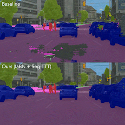

|
I am currently doing my master's thesis at the Visual Inference Lab at the Technical University of Darmstadt supervised by Prof. Stefan Roth. I am a master student in Computational Engineering at the TU Darmstadt with a focus on deep learning and computer vision. I have worked as a student research assistant at the Visual Inference Lab supervised by Nikita Araslanov and Prof. Stefan Roth. In 2019, I was a visiting student at Tongji University Shanghai. I received a Bachelor in Mechanical Engineering with a focus on mechatronics and robotics from TU Darmstadt. At the Institute for Mechatronic Systems, I did research on multi-objective optimization of electrical machines, supervised by Prof. Stephan Rinderknecht. This resulted in a new type of linear, electrodynamic actuator which led to a DPMA patent. |

|
|
I am interested in deep learning for computer vision, as well as the intersection between vision and language, and curious about generative models and multimodal learning. |
|  |
Sherwin Bahmani*, Oliver Hahn*, Eduard Zamfir*, Nikita Araslanov, Stefan Roth Under review |
|
Website source code by Jon Barron. |